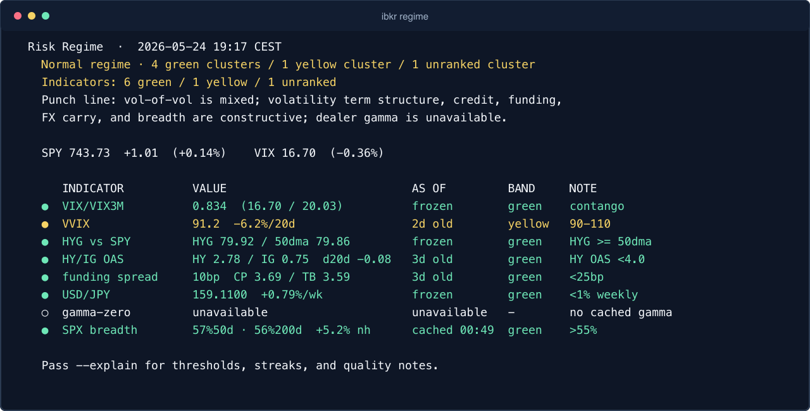
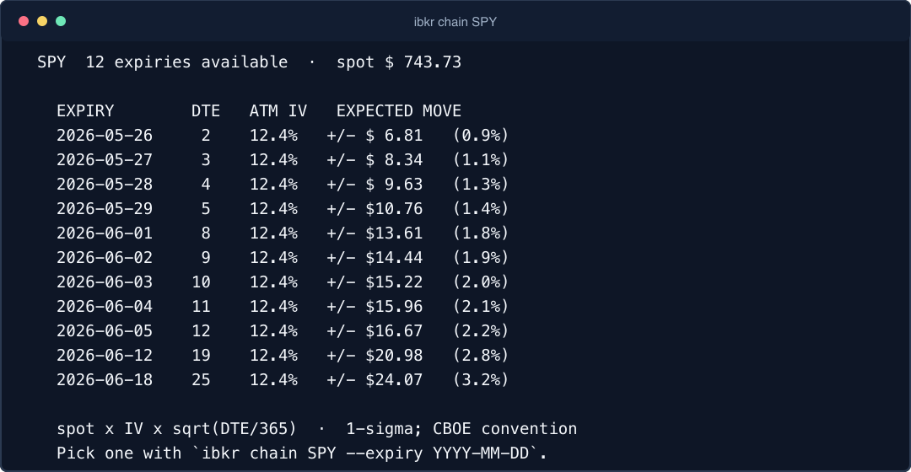
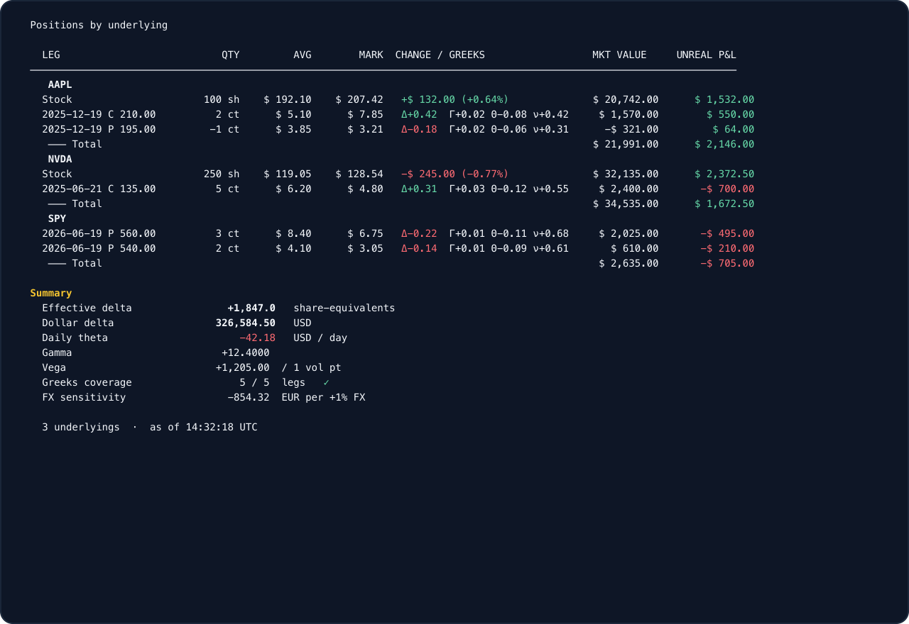

Risk regime
One dashboard for volatility, credit, funding, FX carry, dealer gamma, and S&P 500 breadth.
Agentic IBKR workflows
Connect Interactive Brokers (IBKR) Gateway or TWS to Claude Desktop, Claude Code, Cursor, Zed, and other MCP hosts. Turn portfolio, options, quotes, scanners, breadth, gamma, regime, and data-quality checks into review workflows an assistant can actually use.
The bundled MCP surface is read-side only: agents can analyze, monitor, and size plans without receiving order-entry tools.
Claude Desktop: open the .mcpb file, restart Claude, and keep IB Gateway or TWS running locally. Claude Code: install the plugin, then install the local ibkr binary.

Terminal screenshots are generated from synthetic fixture data, so the public page shows the real CLI shape without exposing account holdings or balances.
One dashboard for volatility, credit, funding, FX carry, dealer gamma, and S&P 500 breadth.

Scheduled lifecycle, readiness, source-health, and stress checks from account, exposure, regime, and data-quality gates.

Expiry lists, ATM implied volatility, and expected moves from the local IBKR market-data session.

Underlying grouping, option legs, marks, Greek coverage, and portfolio-level exposure with sensitive values redacted here.
The MCP descriptions are written for agent routing, so assistants can pick the right tool without you naming commands.
ibkr mcp exposes account, quote, calendar, chain, scanner, sizing, breadth, gamma, regime, and stress-monitoring tools to MCP clients for analysis and scheduled-review workflows.
Run commands such as ibkr status, ibkr positions, ibkr canary, ibkr calendar, ibkr chain SPY, and ibkr regime. Every data command supports JSON; the CLI is useful, but the Claude/MCP path is the main path.
github.com/osauer/ibkr/pkg/ibkr speaks the TWS protocol directly with no Python bridge and no IBKR jars.
Use the page that matches the phrase you searched for; all paths install the same local ibkr mcp workflow surface.
Exact setup path for using ibkr mcp against a local Trader Workstation API session.
Exact setup notes for users searching by the IBKR acronym and MCP server phrase.
The broader guide for account, market-data, install, and safety boundaries.
Use Trader Workstation as the local API session behind the MCP tools.
Use the lighter local Gateway process as the source for account and market data.
Install the MCPB and connect Claude Desktop to your local IBKR session.
Exact setup notes for Claude Desktop users whose search results are mixing in IBKR Desktop.
Use Claude Desktop or Claude Code for local IBKR portfolio review and market analysis.
How to evaluate Claude Code IBKR MCP servers by local execution, tool coverage, and current execution boundary.
Ask natural-language portfolio questions against live local positions, options, and market context.
Use a desk-style prompt to rank exposures, options risks, quote freshness, and next review steps.
Make the no-order-entry boundary explicit for agentic account and market workflows.
Claude Desktop users should start with the MCP Bundle release asset. Claude Code users can install the plugin plus the local binary. Shell and generic MCP users can install the CLI and configure a local stdio server.
Prerequisites: IB Gateway 10.37+ or TWS running locally, plus an IBKR Pro account with TWS API access. IBKR Lite does not include TWS API access.
Download MCPB for Claude Desktop
Open the .mcpb file with Claude Desktop, drag it into Claude Desktop, or use Settings > Extensions > Install Extension. macOS and Linux are supported; Windows users can use WSL with the shell path.
# Claude Code plugin
/plugin marketplace add osauer/ibkr
/plugin install ibkr@ibkr
# Shell, Cursor, Continue, Zed, generic MCP hosts
curl -fsSL https://raw.githubusercontent.com/osauer/ibkr/main/install.sh | sh
ibkr setup claude-desktop
# then ask:
# "How does my IBKR account look today?"ibkr mcp is a local Model Context Protocol server for Interactive Brokers account and market-data workflows.
No. The bundled CLI and MCP server expose account and market data, but no place, modify, or cancel order tools.
Yes. It connects to a local TWS or IB Gateway API session and auto-discovers the standard paper and live ports.
Install the latest MCPB release asset, open it with Claude Desktop, and restart Claude while IB Gateway or TWS is running.